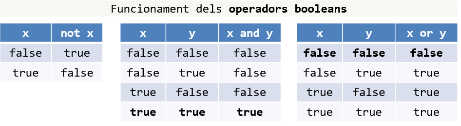
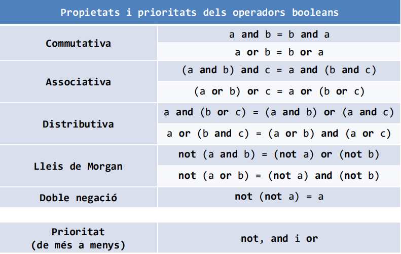
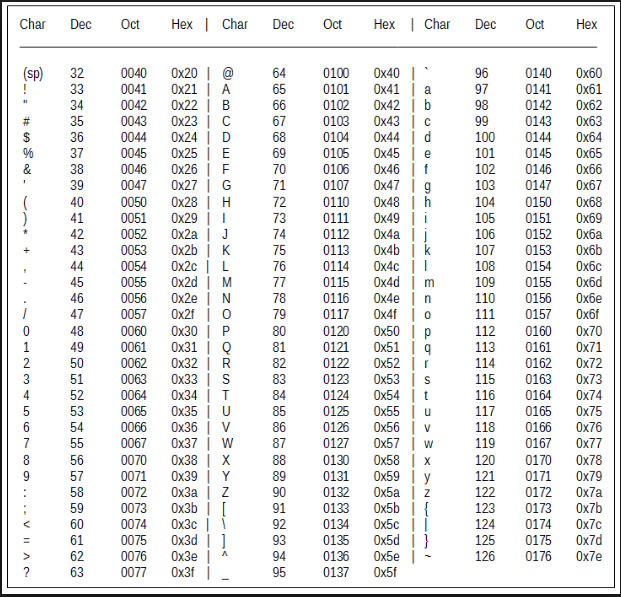

2.2 TIPUS ELEMENTAL DE LES DADES
Tipus Elementals de dades
Què és un tipus:
Un tipus es defineix per:
- Conjunt de valors: també anomenat domini. Són tots aquells valors que accepta el tipus, com podria ser nombres enters, nombres decimals, valors lògics, caràcters de l'alfabet, etc.
- Operadors: Un conjunt d'operacions que es poden dur a termes entre elements del mateix tipus. En el cas dels nombres els operadors seran: sumar, resta, multiplicar, dividir, i altres. Aquestes operacions i/o d'altres s'han de definit per cada tipus.
Tipus bàsics:
TIPUS NUMÈRICS
El c++ ens dóna tres grans subgrups de tipus: reals, enters, i natruals.Reals
En C++ tenim els següents tipus:
- Float: aquest tipus permet gestionar nombres relativament petits (al voltant de 7 dígits), ja siguin de la part entera o decimal.
- Double: són més grans que el float, i permeten usar al voltant de 15 dígits.
Enters
- / : la divisió és entera, per tant mai donarà decimals, sinó la part entera.
- % : el mòdul és el residu de la divisió que hi ha quant la divisió és entera.
- Exemple: la divisió entera entra 5 dividit entre 2: 5/2 = 2. Mentre que el mòdul 5%2 = 1. (2 * 2 +1 = 5).
- Int: és el tipus predominant i s'usa de forma general. Permet arribar fins a +- 2,147,483,647.
- Short: ocupa poc espai de memòria que el int, i ens permet arribar fins a +- 32,767.
Naturals
Tipus en C++:
- Unsigned int: també se'l pot anomenar unsigned i permet arribar a nombres dins del rang [0 - 4,294,967,295].
- Short unsigned int: aquest no es sol utilitzar quasi mai, i ens permet un rang de [0 - 65,535].
Lògics
Les dades de tipus lògiques (o booleanes) representen els estats comb cert o fals. Permeten fer les operacions de negació , conjunció i disjunció, que donen com a resultat una dada lògica. El c++ ens defineix el tipus bool:Bool
- False: es considera fals, tota variable numèrica amb valor 0. També es considera fals els punters a null.
- True: es considera true, tota variable numèrica diferent de 0, i qualsevol punter vàlid (diferent de null).
- Negació: S'escriu amb el signe " ! " o bé amb " not ", i inverteix el valor lògic.
- Conjunció: S'escriu amb el signe "&&" o bé amb "and", i retorna cert si els dos operands són certs.
- Disjunció: S'escriu amb el signe "||" o bé amb "or", i retorna cert si un dels dos operands és cert.


Caràcters
Les dades tipus caràcters s'utilitzen per representar Lletres, dígits (no el valor numèric, sinó la "escriptura"), signes de puntuació i Caràcters de control(aquests no són propis de cap alfabet, sinó que serveixen per donar controlar diferents formats de fitxer, dades, etc.). El c++ ens dóna els següents tipus:Char
Taula ASCII:
Amb aquesta taula podem passar de caràcter a enter, i al revés, per exemple: 'A' = 65, 113 = 'q'. Amb aquestes conversions podem fer les següents operacions:
- Suma: Permet sumar caràcters i/o sumar caràcters amb enters. Per exemple: 'A' + 2 = 'C'. O bé, ' = ' + ' < ' = ' ( ' .
- Resta: Permet restar caràcters i/o restar caràcters amb enters. Per exemple: 'a' - 30 = 'C'. O bé, 'z' - '!' = 'Y'.
String
Aquesta llibreria permet diferents operacions, per més informació consulteu la llibreria string.
Per assignar un valor a un string usem " ".